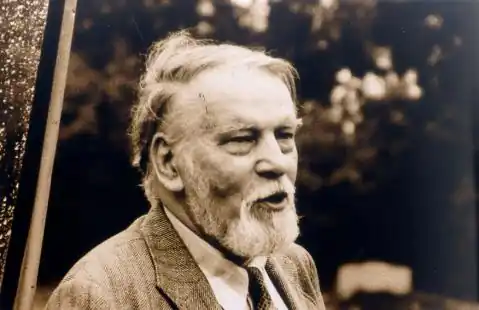

13 липня 2006, у віці 79 років, помер поет, перекладач, давній журналіст журналу "Мета" (раніше — "Перемога") Вітаутас Рудокас. Важко сказати, хто сьогодні є поетом, перекладачем, редактором у цій тріаді. Очевидно, що єдиним є те, що смерть об'єднує всі покликання, зливається, не враховуючи, хто з них прийшов, і хто до цих пір залишався прагненням.
Творчий шлях В. Рудокасу досить напружений і важкий: він дебютував досить рано (1955 р.), В умовах агресивного ідеологічного тиску, який, здавалося, занадто послухався, і це поставило його сильно вписану печатку на його творчу біографію, його творчий образ. Здається, що ці перші поразки творчості, перші поразки зробили вирішальний вплив на характер поета, його літературну позицію: навіть коли тематично, проблематично його поема обернулося на протилежний напрямок інтимних переживань, він формально залишився захарастивим віршем сухого класичного четвертинного, через який неперевірені життя темперамент, справжній досвід. Мабуть, з цим В. Рудок, взявши його на себе, раціонально, навіть раціонально, приймав місії: створювати не окремі вірші, а цикли віршів, поезійські книги. Тим самим він випустив збірку органу псевдо (1972), книгу поетичних портретів "Любити це життя" (1983), а також збірку текстів і перекладів для Грузії "Жива дерева" (1987). Навіть дійсно автентичний, чутливий восьмибальний цикл "Вітер на обличчя" він "розтягнув" на єдиний підручник цієї канонічної форми (1985). Отже, тут високий рівень емоційності, імпульсивності та своєрідної раціональності водяного знака. Він пом'якшував поета більше, ніж допомагав.
Напевно, що "лебедівська пісня" поета повинна вважатись його книгою розмовних текстів "Говорити сказку матері" (1996), в якій не сам поет, а його мати, батько, сестра, стверджує. Ця книга перш за все важлива, мабуть, не тому, що це перша книга поезії в Купишкінайнах. Вона особлива, тому що вона збирає всі найважливіші теми — дім, сім'я, родичі, дитинство — теми, розроблені в кілька десятиліть книг: від Проскина (1967) до вітру в обличчя (1985). Нарешті, це смертельна книга: більша частина його життя, яка жила у Вільнюсі, останній, найтрагічніший з його років, провів свого поета на своїй батьківщині Купишкіс. Не випадково я кажу, що це фатально: він вже дуже закритий у особистих питаннях, В. Рудока, скільки років йому довелося взаємодіяти з ним, майже розмовний про Купишкіс, Норюнас, завжди блищав. Тому що ми народилися не тільки під одним знаком зодіаку, але і в тому ж селі Норіуні в Купишкісском районі. На жаль, він знав про Норіджуна більше, ніж я, і розмова була, як правило, односторонньою. Я хотів би поставити ще одну річ: хто сам (незважаючи на офіційні скептичні літературні прийоми) вважав В. Рудока поетом, перекладачем, редактором? Зрозуміло, що він найбільше хотів бачити себе поетом, але був надто розумним, щоб не розуміти, що особисті амбіції автора не могли змінити громадську думку. Тому вони намагалися взагалі не говорити про свою роботу. Або вони говорили абстрактно, переходячи у більш загальні культурні контексти. Скажімо, в той же час був запущений журнал Proskyna Culture, а потім студенти підготували альтернативний щомісячний журнал Sietynas. І В. Рудокас, схоже, сміявся з ним, але з власною посмішкою він, схоже, серйозно хотів відтворити: подивіться, як мої книжкові назви "йдуть" (Просьонна називалася четвертою книгою його лірики, а Сієтана — першою збіркою). Здається, що з роками він, хоч і не бажаючи, здається, змирився з межами його можливостей (наприклад, знаючи мої симпатії Б. Пастернаку, я показав майже всі переклади цієї роботи поета, але не помітив, що принаймні одного разу я приймав принаймні офіційні зауваження, хоча сам як редактор у читанні авторських рукописів, у формі поезії, в ритмі, у питаннях гостроти, був педантом) і переніс всі свої неповні творчі амбіції на плечі Тома на свого сина. Неймовірний тягар тяжкості. Я пам'ятаю В. Рудока як кращий у коридорах та офісах Перемоги. Якщо він входить до офісу, він запитує — а де ваше дзеркало? — отже, принаймні другий раз секретар секретар зафіксував, що а. В. Дауніс пішов десь у робочий час (що він грає в шахи в офісі цілий день, і ніхто не існує, це просто обов'язкове інтелектуальне вчення). Якщо, входячи до офісу, правою рукою стукає вказівний палець на циферблаті годинника, це означає, що залишається лише кілька днів або навіть декілька годин, щоб повернутися до секретаріату матеріали, підготовлені департаментом. Складається враження, що В. Рудокс, схоже, виглядає таким: якщо ні, то редакційна робота руйнується, перша цифра року з'явиться лише в грудні, і, загалом, тільки набиті єврейські бджоли, які можуть контролюватися єдиним зразковим, пунктуальним відповідальним ... Тепер я думаю, що і це здавалося самому поетові, тому що я бачив, як він залишив редакцію над неймовірно коротким періодом часу, він став нестабільним і просто став невідомим. Тому що редакційна робота не пішла. Незважаючи на ці особисті екскурсії, треба визнати: він був дуже чесним чоловіком, він все говорив прямо, нічого не говорив про очі, не кинувся. Тому його відносини були хорошими навіть з таким рогам, як Р. Гавеліс. Він не вдарив порушників "робочої дисципліни", навіть якщо вони були начебто мовчазні про них, і здається, що якщо б у юності він не мав занадто багато самоконтролю та самоконтролю, він був би "водянистим" достатньо. Ми залишили яскраву, хоч і дуже закриту, особистість культури, і те, що він вибрав вічне місце відпочинку в Паленові, з його батьками, а не в Вільнюсі, а також яскравим. Він подорожував там у своїй роботі — послідовно, терпеливо — протягом більше чотирьох десятиліть. З колекції "Соняшниковий літо" (1963). Valdas Kukulas